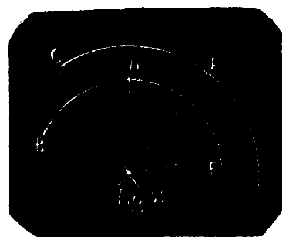
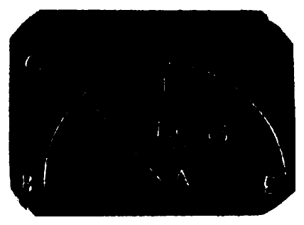

§§ 113–117: Copying, Multiplying & Testing Angles¶
BOOK EIGHT
ON THE CONSTRUCTION, MULTIPLICATION, AND DIVISION OF ANGLES AND OF TRIGONOMETRIC LINES
113. Notice. When we say: to construct an angle \(abc\) with the compass (fig. 51), we shall mean: to find with the compass three points \(a, b, c\); or, some of them being given, to find the others in such a way that if one should then wish to draw a straight line through two of them \(a, b\), and another straight line through one of these two \(b\) and through the third \(c\), one would have an angle \(abc\) of the desired magnitude. Although the angle \(abc\) is not truly constructed until the straight lines \(ab, bc\) have actually been drawn—for drawing which the compass alone cannot suffice—nevertheless for brevity we shall often use the first phrase, intending it to be equivalent in meaning to the second.

114. Problem. Given an angle \(ABC\) by means of the three points \(A, B, C\) (fig. 51), and given two other points \(b\) and \(a\); to find a point \(c\) such that the angle \(abc\) shall be equal to \(ABC\).
Solution. Having found (§ 93) a fourth proportional to the three distances \(AB, ab, BC\), with this taken as radius and with center \(b\) describe an arc passing through \(c\). Having also found a fourth proportional to the three \(AB, ab, AC\), with this taken as radius and with
f. 0089 · p. 64center \(a\) describe another arc cutting the first at \(c\). Then angle \(abc = ABC\).
Demonstration. Since the two triangles \(ABC, abc\) have their sides proportional, they will have the angles opposite to proportional sides equal (VI.5).
115. The solution of the preceding Problem (§ 114) will therefore also serve to solve this problem: Given the three points (fig. 51) \(A, B, C\) at the vertices of a triangle, and two \(a, b\) at those of another, to find the third vertex \(c\) such that triangle \(abc\) shall be similar to triangle \(ABC\).
116. Problem. To double, triple, quadruple, etc. (fig. 52) a given angle \(BAC\) (§ 113).
Solution. With center \(A\) and radii \(AB, AC\) describe two indefinite arcs \(BDF, CE\). Make \(CB = CD\). Then angle \(BAD\) will be double \(BAC\).
Make \(CD = DE\). Then angle \(BAE\) will be triple \(BAC\).
Make \(DE = EF\). Then \(BAF\) will be quadruple \(BAC\), etc.
To quadruple it, one could also make \(BD = DF\).
Demonstration. Since triangles \(BAC, CAD, DAE, EAF\), etc. have all their sides respectively equal, angles \(BAC, CAD, DAE, EAF\), etc. will be equal (I.8). Therefore, etc. Hence since angle \(BAD = DAF\), we shall also have \(BD = DF\) (I.4).


117. Problem. To examine whether the angle \(BAG\) (fig. 53), given by means of the three points \(B, A, G\), is half a right angle.
Solution. With radius \(AB\) and center \(A\) describe the semicircumference \(BFE\) (§ 64). Make \(GB = GF\) (§ 10). If \(BF = FE\), angle \(BAG\) will be half a right angle. If \(BF\) is less or greater than \(FE\), angle \(BAG\) will be less or greater than half a right angle.
Demonstration. Since angle \(BAF\) is double angle \(BAG\) (§ 116), if angle \(BAG\) is half a right angle, \(BAF\) will be right; hence \(BF = FE\) (§ 83). Otherwise if \(BAG\) is less or greater than half a


right angle, \(BAF\) will be less or greater than a right angle; hence \(BF\) less or greater than \(FE\) (I.24).